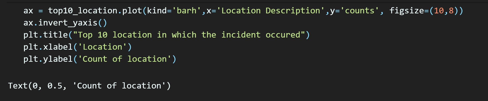

Chicago Crime Data Analysis
Data Exploration and Visualization
This dataset reflects reported incidents of crime that occurred in the City of Chicago from 2012 to 2017, which I downloaded as the csv file.
Import the libraries, read the csv file, and
head() method returns the total rows and columns in
this dataset, whichi is 5 rows and 23 columns. This dataset
contains records including the type of Crime, Location, Date,
and Whether the arrest result was true or faulse.
...
Bar Chart
List the number of top 10 crimes reported in these 5 years.
...
Generate the bar graph.

...
Pie Chart
Counts of whether the incident was domestic-related or not.
The result shows that domestic is 220054, non-domestic is 1236660.


...
Generate pie chart